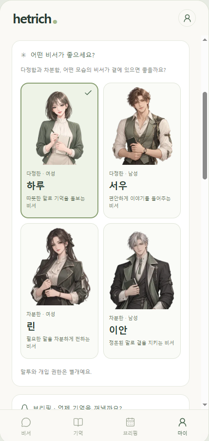
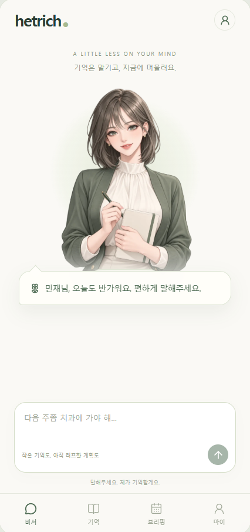

Verified AI briefing
L‑Proof AI
소식을 더 빨리 복제하기보다, 원문과 공식 발표를 먼저 확인하는 AI 브리핑.
AI가 조사와 초안을 돕고 사람이 출처, 의미, 발행 여부를 검토합니다. 현재 공개 랜딩과 구독 흐름을 운영 중이며, 승인된 원고만 예약 발송하는 구조를 다듬고 있습니다.
Practical AI / Human in the loop
HETRICH는 AI를 답변창 안에 두지 않습니다. 기억, 검증, 기록처럼 매일 반복되는 일에 연결하고, 중요한 판단은 사람에게 남겨둡니다.
제품 보기01 / Products
서로 다른 문제를 다루지만, 모두 AI와 사람의 역할을 분명하게 나누는 데서 시작합니다.
Verified AI briefing
소식을 더 빨리 복제하기보다, 원문과 공식 발표를 먼저 확인하는 AI 브리핑.
AI가 조사와 초안을 돕고 사람이 출처, 의미, 발행 여부를 검토합니다. 현재 공개 랜딩과 구독 흐름을 운영 중이며, 승인된 원고만 예약 발송하는 구조를 다듬고 있습니다.
Personal memory assistant
기억은 맡기고, 지금에 머물 수 있도록.
정확한 일정뿐 아니라 “다음 달쯤” 같은 느슨한 계획도 받아두고, 필요한 때 다시 꺼내주는 개인 비서 경험을 만들고 있습니다. 공개 저장소에는 현재 철학과 개발 중인 화면을 소개합니다.


Everyday nutrition utility
기록의 양보다, 오늘 남은 선택을 빠르게 이해하는 칼로리 앱.
평소 말하듯 음식을 입력하면 기록하고 남은 칼로리를 보여줍니다. 현재 자연어 기록·수정·삭제가 동작하는 MVP이며, 검증한 음식 데이터부터 좁고 정확하게 확장하고 있습니다.
오늘 · 9월 24일
갈비탕 하나 먹었어
기록했어요. 오늘 362 kcal 먹었어요.
* 예시 목표 2,100 kcal 기준
02 / How we build
완벽한 설계보다 작은 범위를 실제 흐름으로 연결합니다.
사람이 계속 옮기고 확인하는 일을 자동화합니다.
승인, 수정, 삭제처럼 되돌리기 어려운 지점은 사람이 맡습니다.
근거 없는 추측 대신 확인하거나 짧게 되묻습니다.
도구가 바뀌어도 핵심 데이터와 흐름은 남도록 설계합니다.
03 / Insights
아직 별도의 아카이브나 CMS는 연결하지 않았습니다. 지금은 운영 중인 L‑Proof AI에서 최신 브리핑과 구독 안내를 확인할 수 있습니다.
L‑Proof AI에서 보기04 / About
한 사람이 문제를 찾고, 제품을 만들고, 직접 운영합니다. 규모보다 제품이 실제로 맡는 역할과 그 경계를 정직하게 보여주는 일을 중요하게 생각합니다.
지금은 세 제품을 통해 정보 검증, 기억과 일정, 일상 기록이라는 서로 다른 흐름을 실험하고 있습니다.